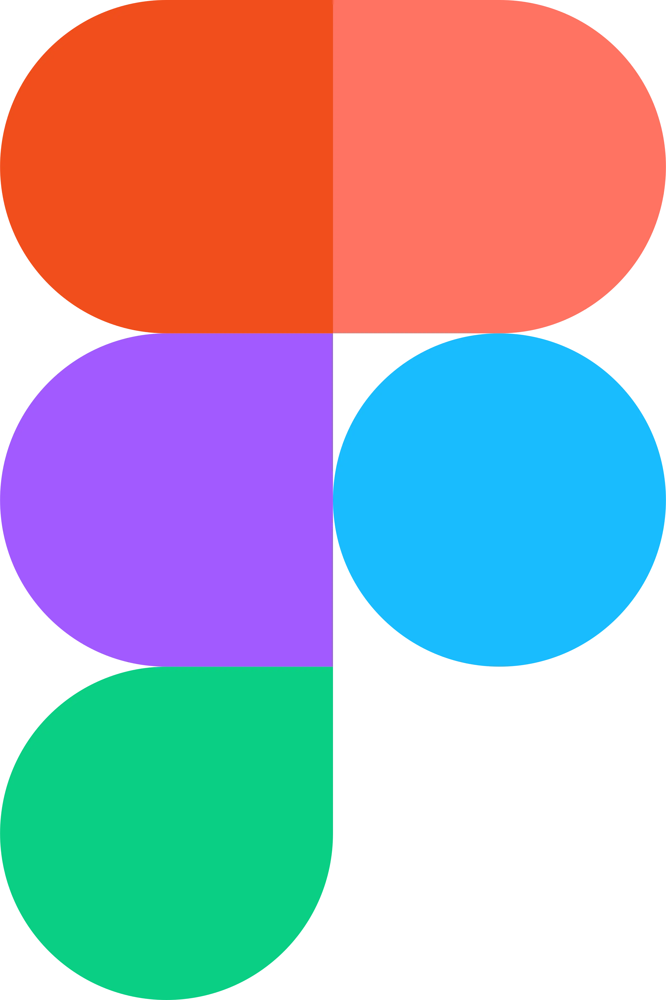

Hi, I'm Chau Luu
Digital Marketer | UX/UI Designer
BBA in Marketing & International Business @ UGA
As a passionate digital marketer and UX designer, I love to take on various challenges to improve and expand upon my skillset. With my previous experience in digital marketing utilizing tools such as Google Analytics and SEO as well as my web development skills, I hope to bring a new perspective to the table and contribute meaningful results.

Skills
HTML
CSS
Javascript
SQL

Figma
Adobe Creative Cloud
Microsoft Office
Google Workspace
Projects


New Media Certificate
I began my New Media Certificate journey in the Fall of 2019. After going to some truly amazing classes, I have learned to create and design a variety of project.I learned how to work with HTML/CSS, WordPress as well as Adobe Creative Suite products to create things I never would have thought was possible for me. Furthermore, I realized that I could incorporate the things I learned into what I do as a Marketing major.
To learn more about my New Media Certificate journey and see my projects from the New Media classes, click on the button below!